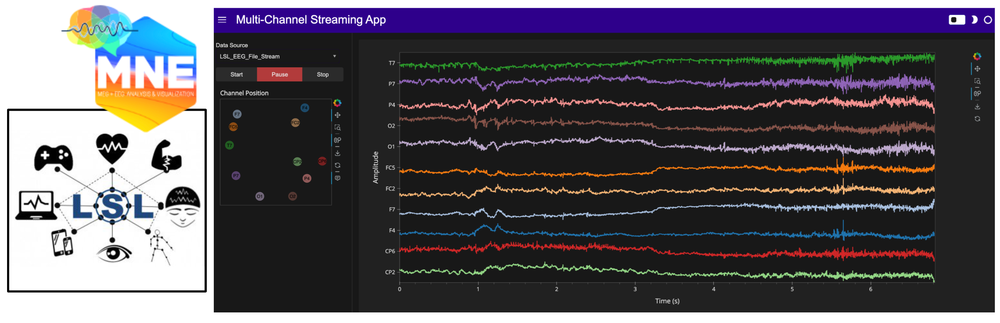

Streaming Timeseries#


Prerequisites#
What? |
Why? |
|---|---|
Provides background and motivation for using browser-based, interactive multichannel timeseries applications in neuroscience, focusing on pre-recorded dataset scenarios. |
Overview#
This workflow tutorial guides you through building a multichannel timeseries live streaming application, using a demo electroencephalogram (EEG) dataset. EEG is a technique for measuring electrical brain activity via electrodes placed on the scalp. It captures the electrical impulses produced by neural cells during communication, which appear as time-varying waveforms on an EEG recording. This application serves as a proof-of-concept demonstration for live streaming and does not cover saving streams to disk.
You’ll start by visualizing live CPU usage to validate and preview the streaming display interface components. Next, you’ll set up a demo EEG data stream using the Lab Streaming Layer (LSL) framework. LSL enables real-time streaming, synchronization, and analysis of neural and physiological signals, with broad interoperability for many physiological and environmental sensing devices.
The final application features:
Data Source Flexibility: Stream data from LSL-compatible neural and physiological sensors.
Interactive Controls: Buttons with state-based styling to start, pause, and stop data streams.
Real-Time Visualization: Periodic updates and dynamic axis adjustments to preserve amplitude context during monitoring.
Return to Stream Follow: Zooming or panning temporarily pauses the viewport’s displayed range; clicking ‘reset’ restores the viewport range to follow the latest stream updates.
Sensor Position Display: Additional plots linked to the data source for visualizing relative sensor positions or other data/metadata.
Extensibility: Easily add real-time analytics, such as event detection, to the workflow.
Key Software#
Imports and Configuration#
import abc
import time
import uuid
from pathlib import Path
import pandas as pd
import numpy as np
import pooch
import psutil
from bokeh.palettes import Category20
from holoviews.streams import Buffer
import holoviews as hv
import panel as pn
import param
import mne
from mne_lsl.player import PlayerLSL
from mne_lsl.stream import StreamLSL
hv.extension("bokeh")
pn.extension()
![](data:image/png;base64,iVBORw0KGgoAAAANSUhEUgAAAEAAAABACAYAAACqaXHeAAAABHNCSVQICAgIfAhkiAAAAAlwSFlz
AAAB+wAAAfsBxc2miwAAABl0RVh0U29mdHdhcmUAd3d3Lmlua3NjYXBlLm9yZ5vuPBoAAA6zSURB
VHic7ZtpeFRVmsf/5966taWqUlUJ2UioBBJiIBAwCZtog9IOgjqACsogKtqirT2ttt069nQ/zDzt
tI4+CrJIREFaFgWhBXpUNhHZQoKBkIUASchWla1S+3ar7r1nPkDaCAnZKoQP/D7mnPOe9/xy76n3
nFSAW9ziFoPFNED2LLK5wcyBDObkb8ZkxuaoSYlI6ZcOKq1eWFdedqNzGHQBk9RMEwFAASkk0Xw3
ETacDNi2vtvc7L0ROdw0AjoSotQVkKSvHQz/wRO1lScGModBFbDMaNRN1A4tUBCS3lk7BWhQkgpD
lG4852/+7DWr1R3uHAZVQDsbh6ZPN7CyxUrCzJMRouusj0ipRwD2uKm0Zn5d2dFwzX1TCGhnmdGo
G62Nna+isiUqhkzuKrkQaJlPEv5mFl2fvGg2t/VnzkEV8F5ioioOEWkLG86fvbpthynjdhXYZziQ
x1hC9J2NFyi8vCTt91Fh04KGip0AaG9zuCk2wQCVyoNU3Hjezee9bq92duzzTmxsRJoy+jEZZZYo
GTKJ6SJngdJqAfRzpze0+jHreUtPc7gpBLQnIYK6BYp/uGhw9YK688eu7v95ysgshcg9qSLMo3JC
4jqLKQFBgdKDPoQ+Pltb8dUyQLpeDjeVgI6EgLIQFT5tEl3rn2losHVsexbZ3EyT9wE1uGdkIPcy
BGxn8QUq1QrA5nqW5i2tLqvrrM9NK6AdkVIvL9E9bZL/oyfMVd/jqvc8LylzRBKDJSzIExwhQzuL
QYGQj4rHfFTc8mUdu3E7yoLtbTe9gI4EqVgVkug2i5+uXGo919ixbRog+3fTbQ8qJe4ZOYNfMoTI
OoshUNosgO60AisX15aeI2PSIp5KiFLI9ubb1vV3Qb2ltwLakUCDAkWX7/nHKRmmGIl9VgYsUhJm
2NXjKYADtM1ygne9QQDIXlk49FBstMKx66D1v4+XuQr7vqTe0VcBHQlRWiOCbmmSYe2SqtL6q5rJ
zsTb7lKx3FKOYC4DoqyS/B5bvLPxvD9Qtf6saxYLQGJErmDOdOMr/zo96km1nElr8bmPOBwI9COv
HnFPRIwmkSOv9kcAS4heRsidOkpeWBgZM+UBrTFAXNYL5Vf2ii9c1trNzpYdaoVil3WIc+wdk+gQ
noie3ecCcxt9ITcLAPWt/laGEO/9U6PmzZkenTtsSMQ8uYywJVW+grCstAvCIaAdArAsIWkRDDs/
KzLm2YcjY1Lv0UdW73HabE9n6V66cxSzfEmuJssTpKGVp+0vHq73FwL46eOjpMpbRAnNmJFrGJNu
Ukf9Yrz+3rghiumCKNXXWPhLYcjxGsIpoCMsIRoFITkW8AuyM8jC1+/QLx4bozCEJIq38+1rtpR6
V/yzb8eBlRb3fo5l783N0CWolAzJHaVNzkrTzlEp2bQ2q3TC5gn6wpnoQAmwSiGh2GitnTmVMc5O
UyfKWUKCIsU7+fZDKwqdT6DDpvkzAX4/+AMFjk0tDp5GRXLpQ2MUmhgDp5gxQT8+Y7hyPsMi8uxF
71H0oebujHALECjFKaW9Lm68n18wXp2kVzIcABytD5iXFzg+WVXkegpAsOOYziqo0OkK76GyquC3
ltZAzMhhqlSNmmWTE5T6e3IN05ITFLM4GdN0vtZ3ob8Jh1NAKXFbm5PtLU/eqTSlGjkNAJjdgn/N
aedXa0tdi7+t9G0FIF49rtMSEgAs1kDLkTPO7ebm4IUWeyh1bKomXqlgMG6kJmHcSM0clYLJ8XtR
1GTnbV3F6I5wCGikAb402npp1h1s7LQUZZSMIfALFOuL3UUrfnS8+rez7v9qcold5tilgHbO1fjK
9ubb17u9oshxzMiUBKXWqJNxd+fqb0tLVs4lILFnK71H0Ind7uiPgACVcFJlrb0tV6DzxqqTIhUM
CwDf1/rrVhTa33/3pGPxJYdQ2l2cbgVcQSosdx8uqnDtbGjh9SlDVSMNWhlnilfqZk42Th2ZpLpf
xrHec5e815zrr0dfBZSwzkZfqsv+1FS1KUknUwPARVvItfKUY+cn57yP7qv07UE3p8B2uhUwLk09
e0SCOrK+hbdYHYLjRIl71wWzv9jpEoeOHhGRrJAzyEyNiJuUqX0g2sBN5kGK6y2Blp5M3lsB9Qh4
y2Ja6x6+i0ucmKgwMATwhSjdUu49tKrQ/pvN5d53ml2CGwCmJipmKjgmyuaXzNeL2a0AkQ01Th5j
2DktO3Jyk8f9vcOBQHV94OK+fPumJmvQHxJoWkaKWq9Vs+yUsbq0zGT1I4RgeH2b5wef7+c7bl8F
eKgoHVVZa8ZPEORzR6sT1BzDUAD/d9F78e2Tzv99v8D+fLVTqAKAsbGamKey1Mt9Ann4eH3gTXTz
idWtAJ8PQWOk7NzSeQn/OTHDuEikVF1R4z8BQCy+6D1aWRfY0tTGG2OM8rRoPaeIj5ZHzJxszElN
VM8K8JS5WOfv8mzRnQAKoEhmt8gyPM4lU9SmBK1MCQBnW4KONT86v1hZ1PbwSXPw4JWussVjtH9Y
NCoiL9UoH/6PSu8jFrfY2t36erQHXLIEakMi1SydmzB31h3GGXFDFNPaK8Rme9B79Ixrd0WN+1ij
NRQ/doRmuFLBkHSTOm5GruG+pFjFdAmorG4IXH1Qua6ASniclfFtDYt+oUjKipPrCQB7QBQ2lrgP
fFzm+9XWUtcqJ3/5vDLDpJ79XHZk3u8nGZ42qlj1+ydtbxysCezrydp6ugmipNJ7WBPB5tydY0jP
HaVNzs3QzeE4ZpTbI+ZbnSFPbVOw9vsfnVvqWnirPyCNGD08IlqtYkh2hjZ5dErEQzoNm+6ykyOt
Lt5/PQEuSRRKo22VkydK+vvS1XEKlhCJAnsqvcVvH7f/ZU2R67eXbMEGAMiIV5oWZWiWvz5Fv2xG
sjqNJQRvn3Rs2lji/lNP19VjAQDgD7FHhujZB9OGqYxRkZxixgRDVlqS6uEOFaJUVu0rPFzctrnF
JqijImVp8dEKVWyUXDk92zAuMZ6bFwpBU1HrOw6AdhQgUooChb0+ItMbWJitSo5Ws3IAOGEOtL53
0vHZih9sC4vtofZ7Qu6523V/fmGcds1TY3V36pUsBwAbSlxnVh2xLfAD/IAIMDf7XYIkNmXfpp2l
18rkAJAy9HKFaIr/qULkeQQKy9zf1JgDB2uaeFNGijo5QsUyacNUUTOnGO42xSnv4oOwpDi1zYkc
efUc3I5Gk6PhyTuVKaOGyLUAYPGIoY9Pu/atL/L92+4q9wbflRJ2Trpm/jPjdBtfnqB/dIThcl8A
KG7hbRuKnb8qsQsVvVlTrwQAQMUlf3kwJI24Z4JhPMtcfng5GcH49GsrxJpGvvHIaeem2ma+KSjQ
lIwUdYyCY8j4dE1KzijNnIP2llF2wcXNnsoapw9XxsgYAl6k+KzUXbi2yP3KR2ecf6z3BFsBICdW
nvnIaG3eHybqX7vbpEqUMT+9OL4Qpe8VON7dXuFd39v19FoAABRVePbGGuXTszO0P7tu6lghUonE
llRdrhArLvmKdh9u29jcFiRRkfLUxBiFNiqSU9icoZQHo5mYBI1MBgBH6wMNb+U7Pnw337H4gi1Y
ciWs+uks3Z9fztUvfzxTm9Ne8XXkvQLHNytOOZeiD4e0PgkAIAYCYknKUNUDSXEKzdWNpnil7r4p
xqkjTarZMtk/K8TQ6Qve78qqvXurGwIJqcOUKfUWHsm8KGvxSP68YudXq4pcj39X49uOK2X142O0
Tz5/u/7TVybqH0rSya6ZBwD21/gubbrgWdDgEOx9WUhfBaC2ibcEBYm7a7x+ukrBMNcEZggyR0TE
T8zUPjikQ4VosQZbTpS4vqizBKvqmvjsqnpfzaZyx9JPiz1/bfGKdgD45XB1zoIMzYbfTdS/NClB
Gct0USiY3YL/g0LHy/uq/Ef6uo5+n0R/vyhp17Klpge763f8rMu6YU/zrn2nml+2WtH+Z+5IAAFc
2bUTdTDOSNa9+cQY7YLsOIXhevEkCvzph7a8laecz/Un/z4/Ae04XeL3UQb57IwU9ZDr9UuKVajv
nxp1+1UVIo/LjztZkKH59fO3G/JemqCfmaCRqbqbd90ZZ8FfjtkfAyD0J/9+C2h1hDwsSxvGjNDc
b4zk5NfrSwiQblLHzZhg+Jf4aPlUwpDqkQqa9nimbt1/TDH8OitGMaQnj+RJS6B1fbF7SY1TqO5v
/v0WAADl1f7zokgS7s7VT2DZ7pegUjBM7mjtiDZbcN4j0YrHH0rXpCtY0qPX0cVL0rv5jv/ZXend
0u/EESYBAFBU4T4Qa5TflZOhTe7pmKpaP8kCVUVw1+yhXfJWvn1P3hnXi33JsTN6PnP3hHZ8Z3/h
aLHzmkNPuPj7Bc/F/Q38CwjTpSwQXgE4Vmwry9tpfq/ZFgqFMy4AVDtCvi8rvMvOmv0N4YwbVgEA
sPM72/KVnzfspmH7HQGCRLG2yL1+z8XwvPcdCbsAANh+xPzstgMtxeGKt+6MK3/tacfvwhWvIwMi
oKEBtm0H7W+UVfkc/Y1V0BhoPlDr/w1w/eu1vjIgAgDg22OtX6/eYfnEz/focrZTHAFR+PSs56/7
q32nwpjazxgwAQCwcU/T62t3WL7r6/jVRa6/byp1rei+Z98ZUAEAhEPHPc8fKnTU9nbgtnOe8h0l
9hcGIqmODLQAHCy2Xti6v/XNRivf43f4fFvIteu854+VHnR7q9tfBlwAAGz+pnndB9vM26UebAe8
SLHujPOTPVW+rwY+sxskAAC2HrA8t2Vvc7ffP1r9o+vwR2dcr92InIAbKKC1FZ5tB1tf+/G8p8sv
N/9Q5zd/XR34LYCwV5JdccMEAMDBk45DH243r/X4xGvqxFa/GNpS7n6rwOwNWwHVE26oAADYurf1
zx/utOzt+DMKYM0p17YtZZ5VNzqfsB2HewG1WXE8PoZ7gOclbTIvynZf9JV+fqZtfgs/8F/Nu5rB
EIBmJ+8QRMmpU7EzGRsf2FzuePqYRbzh/zE26EwdrT10f6r6o8HOYzCJB9Dpff8tbnGLG8L/A/WE
roTBs2RqAAAAAElFTkSuQmCC)
![]()
Loading and Inspecting the Data#
Let’s get some data! This section walks through obtaining an EEG dataset (40 MB).
Note
If you are viewing this notebook as a result of using the `anaconda-project run` command, the data has already been downloaded, as configured in the associated yaml file. Running the following cell should find that data and skip any further download.DATA_URL = "https://datasets.holoviz.org/eeg_ant/v1/sample-ant-raw.fif"
DATA_DIR = Path("./data")
DATA_FILENAME = Path(DATA_URL).name
DATA_PATH = DATA_DIR / DATA_FILENAME
DATA_DIR.mkdir(parents=True, exist_ok=True)
# Download the data if it doesn't exist
if not DATA_PATH.exists():
print(f"Downloading data to: {DATA_PATH}")
pooch.retrieve(
url=DATA_URL,
known_hash=None,
fname=DATA_FILENAME,
path=DATA_DIR,
progressbar=True,
)
else:
print(f"Data exists at: {DATA_PATH}")
Data exists at: data/sample-ant-raw.fif
Minimal Example: Streaming Random Data#
Before diving into the development of a more advanced streaming application, let’s start with a minimal example using random data. This will help us understand the core building blocks of real-time streaming in Panel and HoloViews.
Buffer: Holds the most recent data points for real-time plotting.generate_data: Generates a random value paired with the current timestamp. Usespn.io.unlockedto ensure updates don’t block the user interface (avoiding deadlocks).DynamicMap: Links thebufferstream to thecreate_plotfunction. Automatically refreshes the plot when new data arrives.add_periodic_callback: Schedules thegenerate_datafunction to run repeatedly based on a specified interval. We can then toggle the callback on and off simply by setting therunningparameter.
nchannels = 3
stream_seconds = 10
buffer_length = 1000
# Buffer: Initialize with some random data
buffer = hv.streams.Buffer(
data=pd.DataFrame(np.random.randn(10, nchannels).cumsum(axis=1),
columns=[chr(65 + i) for i in range(nchannels)]),
length=buffer_length
)
# DynamicMap: Link the buffer to the visualization
def out(data):
return hv.NdOverlay(
{chr(65+i): hv.Curve(data, 'index', (chr(65+i), 'Amplitude')).opts(
subcoordinate_y=True, xlabel='Sample')
for i in range(nchannels)}
)
dmap = hv.DynamicMap(out, streams=[buffer]).opts(
legend_position='right', responsive=True, height=400,
title='Minimal Example: Streaming Random Data',
)
# Periodic Callback: Generate and stream new data
def generate_data():
index_start = buffer.data.index[-1] + 1 if not buffer.data.empty else 0
new_data = pd.DataFrame(
np.random.randn(10, nchannels).cumsum(axis=1),
columns=[chr(65 + i) for i in range(nchannels)],
index=np.arange(index_start, index_start + 10)
)
# Unlock: Use unlocked to ensure UI responsiveness
with pn.io.unlocked():
buffer.send(new_data)
# Run the stream for certain duration (timeout in ms)
periodic_cb = pn.state.add_periodic_callback(generate_data, period=100, timeout=stream_seconds*1000)
# Add a stream toggle button for the periodic callback
toggle_button = pn.widgets.Toggle(name='Toggle Stream', value=True, button_type='primary')
# Sync button and callback using `.link` with bidirectional=True and value='running'
toggle_button.link(periodic_cb, bidirectional=True, value='running')
pn.Row(toggle_button, pn.pane.HoloViews(dmap))
Creating Data Sources#
Now that we’ve explored a minimal streaming application with random data, it’s time to take the next step toward building a more advanced streaming application. Instead of random values, we’ll introduce real-world data sources to simulate meaningful streams.
We will create two data sources, and a python class to handle the management of each:
CPU Usage: Streams CPU usage percentages per core.
EEG Usage: Streams EEG data from a sample dataset.
Let’s create a sort of recipe (abstract base class) to ensure that each data source class contains certain methods. We want the class to tell us its channel names, positions, sampling interval, as well as to start up the stream, generate some data, and stop the stream.
class DataSource(abc.ABC):
@abc.abstractmethod
def get_channel_names(self) -> list[str]:
pass
@abc.abstractmethod
def get_channel_positions(self) -> list[dict] | None:
pass
@property
@abc.abstractmethod
def sampling_interval(self) -> float:
pass
@abc.abstractmethod
def generate_data(self) -> pd.DataFrame:
pass
@abc.abstractmethod
def start(self) -> None:
pass
@abc.abstractmethod
def stop(self) -> None:
pass
CPU Usage Data Source#
The CPU_Usage class streams CPU usage data using the psutil
library. This acts as a sort of simple test bench for us to stream some real data and make sure the
plotting application is working. Whenever generate_data is called, it will return a timestamped
measurement of CPU usage across your computer’s cores.
class CPU_Usage(DataSource):
def __init__(self, sampling_interval: float = 0.25, buffer_size: int = 5) -> None:
cpu_count = psutil.cpu_count(logical=True)
self.num_cores = int(cpu_count) if cpu_count is not None else 1
self._sampling_interval = sampling_interval
self.streaming = False
self.channel_names = [f"CPU_{i}" for i in range(self.num_cores)]
self._channel_positions = None # No physical positions for CPU cores
self.buffer_size = buffer_size
@property
def sampling_interval(self) -> float:
return self._sampling_interval
def get_channel_names(self) -> list[str]:
return self.channel_names
def get_channel_positions(self) -> None:
return self._channel_positions
def start(self) -> None:
self.streaming = True
def stop(self) -> None:
self.streaming = False
def generate_data(self) -> pd.DataFrame:
if not self.streaming:
return pd.DataFrame(columns=["time"] + self.channel_names)
cpu_percent = psutil.cpu_percent(percpu=True)
if cpu_percent:
timestamp = pd.Timestamp.now()
data = {"time": [timestamp]}
for ch, usage in zip(self.channel_names, cpu_percent):
if ch not in data:
data[ch] = []
data[ch].append(usage)
return pd.DataFrame(data)
else:
return pd.DataFrame(columns=["time"] + self.channel_names)
LSL File Stream Data Source#
The LSL_EEG_File_Stream class streams EEG data via a mock LSL live stream from a saved file,
using utilities from the mne and mne_lsl libraries.
This class is a bit more involved than the last and requires us to handle the stream setup (start)
and teardown (stop) in a particular way, according to the
PlayerLSL and
StreamLSL
docs. However, the idea is the same, when generate_data is called, it will return timestamped
dataframe of the next block of channel measurements.
class LSL_EEG_File_Stream(DataSource):
def __init__(self, fname: str, picks: str = "eeg") -> None:
# Generate unique identifier for this stream instance
self.source_id = uuid.uuid4().hex
self.fname = fname
self.name = f"MNE-LSL-{self.source_id}"
self.chunk_size = 20
self.player = PlayerLSL(
self.fname,
chunk_size=self.chunk_size,
source_id=self.source_id,
name=self.name,
)
self.stream = StreamLSL(
bufsize=2,
name=self.name,
source_id=self.source_id,
)
self._sampling_interval = 0.02 # 20ms update rate
self.streaming = False
self.picks = picks
self.reference = "average"
# Set up channel names based on 'picks' input
if self.picks == "eeg":
ch_type_indices = mne.channel_indices_by_type(self.player.info)["eeg"]
self.channel_names = [str(self.player.ch_names[i]) for i in ch_type_indices]
else:
self.channel_names = list(map(str, self.picks))
# Get channel positions from standard 10-05 montage
montage = mne.channels.make_standard_montage("standard_1005")
positions = montage.get_positions()["ch_pos"]
# Store positions for channels present in the montage
self.channel_positions = []
for ch in self.channel_names:
if ch in positions:
pos = positions[ch]
self.channel_positions.append(
{
"xpos": pos[0],
"ypos": pos[1],
"ch": ch,
}
)
def get_channel_names(self) -> list[str]:
return self.channel_names
def get_channel_positions(self) -> list[dict]:
return self.channel_positions
@property
def sampling_interval(self) -> float:
return self._sampling_interval
def start(self) -> None:
if not self.streaming:
self.player.start()
# Allow time for stream initialization
time.sleep(0.1)
try:
self.stream.connect(timeout=5.0)
except RuntimeError as e:
print(f"Failed to connect to LSL stream: {e}")
self.player.stop()
raise
self.stream.pick(self.picks)
if self.reference:
self.stream.set_eeg_reference(self.reference)
self.streaming = True
def stop(self) -> None:
if self.streaming:
self.stream.disconnect()
self.player.stop()
self.streaming = False
def generate_data(self) -> pd.DataFrame:
if not self.streaming:
return pd.DataFrame(columns=["time"] + self.channel_names)
# Collect all new samples since last call
data, ts = self.stream.get_data(
self.stream.n_new_samples / self.stream.info["sfreq"],
picks=self.channel_names,
)
if data.size > 0:
# Convert timestamps to pandas
ts = pd.to_datetime(ts, unit="s")
new_data = pd.DataFrame({"time": ts})
for i, ch in enumerate(self.channel_names):
new_data[ch] = data[i]
return new_data
else:
return pd.DataFrame(columns=["time"] + self.channel_names)
Building the Streaming Application#
The StreamingApp class below handles the user interface and streaming logic, integrating the data
sources with interactive controls. Comments are included for each part of the code that might need
additional context.
Before diving into the code, let’s recap and provide updated context for some key streaming implementation aspects. In short:
hv.streams.Buffercollects and manages incoming datahv.DynamicMapcreates a dynamic visualization based on the bufferpn.state.add_periodic_callbackschedules regular data updatespn.io.unlockedensures these updates happen without interrupting the user experience
hv.streams.Buffer#
The hv.streams.Buffer is a specialized stream designed for efficiently handling streaming data. It acts as a circular buffer, accumulating incoming data up to a specified length. Think of it as a sliding window for your data that automatically manages memory and keeps only the most recent information. This makes it ideal for real-time applications where you need to maintain only the most recent data while discarding older entries. In this application, the Buffer is initialized with an empty DataFrame and then stores the latest samples of streamed data, providing this data to the hv.DynamicMap for real-time plotting. This ensures memory efficiency and performance stability, even with continuous data streams.
Why it’s used here: To manage and store recent data for real-time visualization while discarding older data to maintain performance.
hv.DynamicMap#
hv.DynamicMap is a core feature in HoloViews that facilitates dynamic and interactive visualizations. It takes a callable (like a function or method) and a set of streams (data sources) as inputs. When the data in the streams changes, the callable is re-executed with the updated data, generating an update within the plot (rather than the entire plot). This is particularly useful for applications that require real-time updates, as it allows plots to refresh automatically as new data arrives. In our application, hv.DynamicMap links the streamed data from hv.streams.Buffer to the plotting logic, ensuring that visualizations remain current with minimal performance overhead. For more details, refer to the HoloViews DynamicMap documentation.
Why it’s used here: It enables responsive, efficient visualization of live data streams with minimal overhead.
pn.state.add_periodic_callback#
pn.state.add_periodic_callback is a utility in Panel that allows you to schedule functions to run at regular intervals. This feature is essential for applications that need to update visualizations continuously without user interaction. In our StreamingApp below, this function is used within the start_stream method to periodically fetch new data from the active source and update the stream. The parameters include callback, which specifies the function to run, and period, which defines how often it runs (in milliseconds). This setup ensures that the application remains synchronized with live data updates. The returned PeriodicCallback object provides control methods like start and stop for dynamic user interaction.
Why it’s used here: To automate and schedule periodic updates, ensuring that the visualization remains synchronized with the latest data.
pn.io.unlocked#
The pn.io.unlocked context manager allows for temporary unlocking of the Bokeh Document lock, enabling updates to the UI during data processing. Without this, frequent updates might freeze the application or cause deadlocks, especially during heavy computation or rapid data updates. In this application, pn.io.unlocked is used in the stream_data method to ensure that updates to the hv.streams.Buffer are safely applied without blocking the main application. This ensures responsiveness and smooth operation of the user interface during streaming.
Why it’s used here: To prevent application deadlocks and maintain responsiveness during frequent updates.
class StreamingApp(pn.viewable.Viewer):
data_sources = param.List(doc="List of available data sources.")
notebook = param.Boolean(default=True, doc="Flag to determine if running in a notebook.")
buffer_length = param.Integer(default=5000, bounds=(1, None), doc="Length of the streaming buffer in samples.")
def __init__(self, **params):
super().__init__(**params)
# Used to normalize timestamps relative to stream start
self.initial_time = None
# Create mappings for the data source selector dropdown
self.data_source_instances = {type(ds).__name__: ds for ds in self.data_sources}
self.data_source_names = list(self.data_source_instances.keys())
self.data_source = self.data_source_names[0]
# Sets up channel names and their color mapping based on the selected data source
self.update_channel_names()
# Circular buffer
self.buffer = Buffer(data=self.initial_data(), length=self.buffer_length)
self.streaming = False
self.paused = False
self.task = None # Will store the periodic callback for data updates
self.data_generator = None # Active data source instance
self.create_widgets()
self.create_layout()
def update_channel_names(self) -> None:
data_source_instance = self.data_source_instances[self.data_source]
self.channel_names = data_source_instance.get_channel_names()
palette = Category20[20]
self.color_mapping = {
channel_name: palette[i]
for i, channel_name in enumerate(self.channel_names)
}
self.current_sampling_interval = data_source_instance.sampling_interval
# Reset buffer when channel configuration changes
if hasattr(self, "buffer"):
self.buffer.clear()
self.buffer.data = self.initial_data()
def initial_data(self) -> pd.DataFrame:
# Create empty DataFrame with time and channel columns
return pd.DataFrame({"time": [], **{ch: [] for ch in self.channel_names}})
def create_widgets(self) -> None:
# Data source selection dropdown
self.data_source_widget = pn.widgets.Select(
name="Data Source",
options=self.data_source_names,
value=self.data_source,
)
self.data_source_widget.param.watch(self.on_data_source_change, "value")
# Stream control radio buttons with custom styling for active state
self.radio_group = pn.widgets.RadioButtonGroup(
name="Stream Control",
options=["Start", "Pause", "Stop"],
value="Stop",
button_type="default",
sizing_mode="stretch_width",
stylesheets=[
"""
:host(.solid) .bk-btn.bk-btn-default.bk-active {
background-color: #b23c3c;
}
"""
],
)
self.radio_group.param.watch(self.handle_state_change, "value")
def on_data_source_change(self, event) -> None:
# Stop any existing stream before switching data sources
time.sleep(0.1)
self.stop_stream()
self.data_source = event.new
self.update_channel_names()
# Reset visualization with empty plots
self.main_streaming_pane.object = self.bare_stream_plot()
self.position_pane.object = self.bare_pos_plot()
def handle_state_change(self, event) -> None:
# Route radio button selections to appropriate stream control methods
if event.new == "Start":
self.start_stream()
elif event.new == "Pause":
self.pause_stream()
elif event.new == "Stop":
self.stop_stream()
def create_layout(self) -> None:
# Initialize main visualization panes with empty plots
self.position_pane = pn.pane.HoloViews(self.bare_pos_plot())
self.main_streaming_pane = pn.pane.HoloViews(self.bare_stream_plot())
if self.notebook:
# Notebook layout: Sidebar and main plot side by side
self.layout = pn.Row(
pn.Column(
self.data_source_widget,
self.radio_group,
self.position_pane,
width=300,
),
self.main_streaming_pane,
align="start",
)
else:
# Standalone app layout: widgets in sidebar
sidebar = pn.Column(
pn.WidgetBox(
self.data_source_widget,
self.radio_group,
),
self.position_pane,
sizing_mode="stretch_width",
)
self.template = pn.template.FastListTemplate(
main=[self.main_streaming_pane],
sidebar=[sidebar],
title="Multi-Channel Streaming App",
theme="dark",
accent="#2e008b",
)
def start_stream(self) -> None:
if not self.streaming:
# Use context manager to show loading state while setting up stream
with self.main_streaming_pane.param.update(loading=True):
self.streaming = True
self.paused = False
# Initialize data generator and viz
self.data_generator = self.data_source_instances[self.data_source_widget.value]
self.position_pane.object = self.create_position_plot()
self.data_generator.start()
self.buffer.clear()
self.initial_time = None # Reset initial time when starting new stream
# Set up dynamic plotting with the buffer as the data stream
self.main_streaming_pane.object = hv.DynamicMap(
self.create_streaming_plot,
streams=[self.buffer],
)
# Start periodic data collection
sampling_interval_ms = int(self.data_generator.sampling_interval * 100)
self.task = pn.state.add_periodic_callback(
self.stream_data,
period=sampling_interval_ms,
count=None,
)
# Resume from paused state
elif self.streaming and self.paused:
self.paused = False
if self.task is None:
sampling_interval = 1 / 60
if self.data_generator is not None:
sampling_interval = self.data_generator.sampling_interval
sampling_interval_ms = int(sampling_interval * 100)
self.task = pn.state.add_periodic_callback(
self.stream_data,
period=sampling_interval_ms,
count=None,
)
def pause_stream(self) -> None:
if self.task:
self.task.stop()
self.task = None
self.paused = True
def stop_stream(self) -> None:
if self.streaming:
# Clean up streaming resources
self.streaming = False
self.paused = False
if self.task:
self.task.stop()
self.task = None
if self.data_generator is not None:
self.data_generator.stop()
# Reset UI and internal state
self.radio_group.value = "Stop"
self.main_streaming_pane.object = self.bare_stream_plot()
self.buffer.clear()
self.buffer.data = self.initial_data()
self.data_generator = None
self.initial_time = None
def stream_data(self) -> None:
if not self.streaming or self.paused:
return
# Panel's unlocked context manager prevents callback deadlocks
with pn.io.unlocked():
new_data_df = pd.DataFrame()
if self.data_generator is not None:
new_data_df = self.data_generator.generate_data()
if not new_data_df.empty:
self.buffer.send(new_data_df)
def create_streaming_plot(self, data) -> hv.NdOverlay:
overlays = {}
if not data.empty and "time" in data.columns:
# Store first timestamp to normalize all times relative to stream start
if self.initial_time is None:
self.initial_time = data["time"].iloc[0]
data = data.copy() # Create copy to avoid modifying the buffer's data
# Convert 'time' to numerical seconds
data["time"] = (data["time"] - self.initial_time).dt.total_seconds()
# Create a curve for each channel's data
for ch in self.channel_names:
if ch in data.columns and not data[ch].dropna().empty:
curve = hv.Curve(
(data["time"], data[ch]),
"Time (s)",
"Amplitude",
label=ch,
# ylim=(0, 100),
).opts(
line_width=2,
color=self.color_mapping.get(ch, None),
subcoordinate_y=True,
)
overlays[ch] = curve
if overlays:
ndoverlay = hv.NdOverlay(overlays).opts(
show_legend=False,
responsive=True,
min_height=600,
framewise=True,
title="Data Stream",
xlabel="Time (s)",
ylabel="Amplitude",
)
if "cpu" in self.data_source.lower():
ndoverlay.opts("Curve", ylim=(0, 100))
return ndoverlay
else:
return self.empty_stream_plot()
def create_position_plot(self) -> hv.Points | hv.Overlay:
"""
Creates a position plot for the EEG data source.
This plot represents the spatial positions of electrode sensors on the
subject's scalp. Each labeled electrode is displayed at its corresponding
position, providing a visual reference.
"""
channel_positions = []
if self.data_generator is not None:
channel_positions = self.data_generator.get_channel_positions()
if channel_positions:
# channel positions and colors
df = pd.DataFrame()
if self.data_generator is not None:
df = pd.DataFrame(self.data_generator.channel_positions)
df["clr"] = df["ch"].map(self.color_mapping)
points = hv.Points(df, ["xpos", "ypos"], vdims=["ch", "clr"]).opts(
color="clr",
size=20,
alpha=0.5,
tools=["hover"],
marker="circle",
)
labels = hv.Labels(df, ["xpos", "ypos"], "ch").opts(
text_color="black",
text_font_size="8pt",
)
plot = (points * labels).opts(
xaxis=None,
yaxis=None,
axiswise=True,
height=300,
responsive=True,
shared_axes=False,
title="Channel Position",
)
return plot
return self.bare_pos_plot()
def bare_stream_plot(self, min_height: int = 600) -> hv.Curve:
curve = hv.Curve([]).opts(
yaxis="bare",
xaxis="bare",
min_height=min_height,
responsive=True,
)
return curve
def empty_stream_plot(self) -> hv.NdOverlay:
empty_curves = {
ch: hv.Curve([]).relabel(ch).opts(
subcoordinate_y=True,
color=self.color_mapping.get(ch, None),
)
for ch in self.channel_names
}
ndoverlay = hv.NdOverlay(empty_curves).opts(
legend_position="right",
responsive=True,
min_height=600,
title="",
show_legend=False,
)
ndoverlay.opts("Curve", tools=["hover"])
return ndoverlay
def bare_pos_plot(self) -> hv.Points:
points = hv.Points([]).opts(
xaxis=None,
yaxis=None,
axiswise=True,
height=300,
responsive=True,
shared_axes=False,
title="Channel Position",
)
return points
def __panel__(self) -> pn.Row | pn.Column:
if self.notebook:
return self.layout
else:
return self.template
Running the Application#
Instantiate the data sources and create the application.
data_source_cpu_usage = CPU_Usage()
# display a subset of eeg channels with 'picks'
picks = ["F4", "F7", "FC5", "FC2", "T7", "CP2", "CP6", "P4", "P7", "O1", "O2"]
data_source_eeg_usage = LSL_EEG_File_Stream(
"data/sample-ant-raw.fif",
picks=picks,
)
nb_app = StreamingApp(data_sources=[data_source_cpu_usage, data_source_eeg_usage])
Opening raw data file data/sample-ant-raw.fif...
Isotrak not found
Range : 0 ... 153602 = 0.000 ... 150.002 secs
Ready.
Reading 0 ... 153602 = 0.000 ... 150.002 secs...
2024-12-16 09:49:20.970 ( 2.672s) [ C22DA740] netinterfaces.cpp:89 INFO| netif 'lo' (status: 1, multicast: 0, broadcast: 0)
2024-12-16 09:49:20.970 ( 2.672s) [ C22DA740] netinterfaces.cpp:89 INFO| netif 'eth0' (status: 1, multicast: 4096, broadcast: 2)
2024-12-16 09:49:20.970 ( 2.672s) [ C22DA740] netinterfaces.cpp:89 INFO| netif 'docker0' (status: 1, multicast: 4096, broadcast: 2)
2024-12-16 09:49:20.970 ( 2.672s) [ C22DA740] netinterfaces.cpp:89 INFO| netif 'lo' (status: 1, multicast: 0, broadcast: 0)
2024-12-16 09:49:20.970 ( 2.672s) [ C22DA740] netinterfaces.cpp:89 INFO| netif 'eth0' (status: 1, multicast: 4096, broadcast: 2)
2024-12-16 09:49:20.970 ( 2.672s) [ C22DA740] netinterfaces.cpp:102 INFO| IPv4 addr: a01006a
2024-12-16 09:49:20.970 ( 2.672s) [ C22DA740] netinterfaces.cpp:89 INFO| netif 'docker0' (status: 1, multicast: 4096, broadcast: 2)
2024-12-16 09:49:20.970 ( 2.672s) [ C22DA740] netinterfaces.cpp:102 INFO| IPv4 addr: ac110001
2024-12-16 09:49:20.970 ( 2.672s) [ C22DA740] netinterfaces.cpp:89 INFO| netif 'lo' (status: 1, multicast: 0, broadcast: 0)
2024-12-16 09:49:20.970 ( 2.672s) [ C22DA740] netinterfaces.cpp:89 INFO| netif 'eth0' (status: 1, multicast: 4096, broadcast: 2)
2024-12-16 09:49:20.970 ( 2.672s) [ C22DA740] netinterfaces.cpp:105 INFO| IPv6 addr: fe80::20d:3aff:fe3d:b3ef%eth0
2024-12-16 09:49:20.970 ( 2.672s) [ C22DA740] api_config.cpp:271 INFO| Loaded default config
nb_app
{kind=link}
Here’s a static snapshot of what the previous cell produces in the notebook when streaming from LSL data source. 👉
Using the Application#
Select Data Source: Use the dropdown to select data source.
Control Streaming:
Click Start to begin streaming data from the selected source.
Click Pause to temporarily halt data updates without stopping the stream.
Click Stop to stop data updates and the data source itself.
Switching Data Sources:
When you select a different data source, the app automatically stops the current data source before starting the new one.
Standalone App Extension#
HoloViz Panel allows for the deployment of this complex visualization as a standalone, template-styled, interactive web application (outside of a Jupyter Notebook). Read more about Panel here.
In the class above, we created a condition when notebook=False that adds our plot to the main
area of a Panel Template component and puts the widgets in the template’s sidebar. All we need to
do now is create an instance and mark it as servable.
To launch the standalone app, activate the same conda environment and run
panel serve <path-to-this-file> --show in the command line. This will open the application in a
browser window.
Info
In some rare cases we have observed issues running silmutaneously the notebook and the served versions of the application. If you observe such an issue, prior to serving the standalone application, restart the notebook kernel.
standalone_app = StreamingApp(
data_sources=[data_source_eeg_usage, data_source_cpu_usage],
notebook=False,
)
standalone_app.servable(); # semi-colon to suppress output in notebook
{kind=link}
Here’s a static snapshot of what the previous cell produces in a browser window when you serve the standalone app (a templated Panel application). 👉
Conclusion#
We’ve built a real-time multichannel streaming application that can handle different data sources, including EEG data and CPU usage and that can be extended and customized for various real-time data streaming needs.
What Next?#
Customization: Modify the application to include additional data sources or customize the visualization options.
Data Analysis: Extend the application to include data analysis features such as filtering, feature extraction, or event detection.